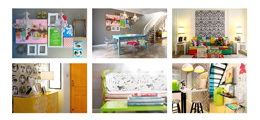
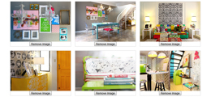

1. Introduction back to top
Thank you for purchasing PinchZoomer jQuery Plugin. As you saw in the preview of this plugin, there are 2 ways you can add multi-touch zoom in your images. Either by using jQuery or HTML. This guide is for those who are familiar with jQuery. If you prefer to use HTML only instead, click here to open the HTML only version of this guide.2. Plugin Setup back to top
Below is a step by step process on how you can get this image zoomer plugin up and running.2.1. Copy the contents of template folder back to top
The template folder contains the basic files you need to make the plugin work. The template folder should have the files below.| Javascript File (in js folder) | Description |
| jquery-1.10.0.min.js | jQuery source - http://jquery.com/ |
| jquery.hammer.min.js | handles touch events - http://eightmedia.github.io/hammer.js/ |
| jquery.mousewheel.min | handles mousewheel events - https://github.com/brandonaaron/jquery-mousewheel |
| modernizr.min.js | handles feature detection - http://modernizr.com/ |
| TweenMax.min.js | handles animation - http://www.greensock.com/ |
| jquery.pinchzoomer.min.js | main script |
| CSS File (in css folder) | Description |
| pinchzoomer.min.css | main CSS file that defines zoom buttons |
| Image File (in assets folder) | Description |
| preloader.gif | default preloader image |
| zoom_in.png | default zoom in image |
| zoom_out.png | default zoom out image |
2.2. Add Javascript and CSS in your HTML back to top
After copying the js and css folders in your project folder, you need to add them in your HTML. It should look something like:<link href="css/pinchzoomer.min.css" rel="stylesheet"> <script src="js/jquery-1.10.0.min.js" type="text/javascript"></script> <script src="js/jquery.mousewheel.min.js"></script> <script src="js/jquery.hammer.min.js" type="text/javascript"></script> <script src="js/modernizr.min.js" type="text/javascript"></script> <script src="js/TweenMax.min.js" type="text/javascript"></script> <script src="js/jquery.pinchzoomer.min.js" type="text/javascript"></script>
Note: jquery-1.10.0.min.js, jquery.mousewheel.min.js, jquery.hammer.min.js, modernizr.min.js and TweenMax.min.js are 3rd party javascript files that can be downloaded from their respective sites. If you already have these, there is no need to add them. it is recommended that you always use the latest source for security and stability.
2.3. Adding multi-touch zoom capability to your image back to top
Copying the required files and adding them to your HTML is probably the hardest part of this guide. The rest of this guide you can do with your one eye closed and one hand tied behind your back. Just to see what I mean take a look at the HTML code below.HTML
<img id="img1" src="assets/1.jpg" />jQuery
$("#img1").pinchzoomer();
That's it. By adding $("#img1").pinchzoomer(); in your JS code, you just added multi-touch zoom to your image. Below is what it looks like 
2.4. Options code template back to top
While the default options are used in most scenarios, you may want to do some tweaking to make it look better in your website. Below is the basic Javascript template on how to set the options. This should make it easy to set only the options you want. Note that you can remove the options you don't want to change.var pzVars = { imageOptions:{}, //set your image options inside the {} like { scaleMode:"heightOnly", maxZoom:6 }
controlOptions:{}, //set the control options inside the {} like { alwaysShow:true }
zoomInOnStyle:"", //set the class name when zoom in is enabled
zoomInOffStyle:"", //set the class name when zoom in is disabled
zoomOutOnStyle:"", //set the class name when zoom out is enabled
zoomOutOffStyle:"" //set the class name when zoom out is disabled
};
$("#img1").pinchzoomer(pzVars); //inititalize plugin to process image with the id of "img1"
2.5. Setting image options back to top
Below are the list of options you can use to customize your image zoomer.| Option | Default Value | Description |
| adjustHeight | 0 | the accepted value is any number. This determines how much height (in pixels) you want to add or remove to your image. |
| adjustWidth | 0 | the accepted value is any number. This determines how much width (in pixels) you want to add or remove to your image. |
| animDuration | 0.3 | the accepted value is any positive number. This determines how long (in seconds) is the animation. |
| doubleTapZoom | 2 | the accepted value is any positive number. This value is the scale when the image is double tapped or double clicked. |
| ease | Power4.easeOut | the accepted value is any easing function. This determines the easing function of the animation. |
| maxZoom | 5 | the accepted value is any positive number more than 1.This determines the maximum zoom of the image. |
| preloaderUrl | assets/preloader.gif | the accepted value is an image filename. This determines the image used as a preloader. |
| resizeDuration | -1 | the accepted value is -1 or any positive number. This determines how long in seconds before checking if the size of the gallery is changed. Note: Use this if you constantly change the size of your gallery or if your gallery is not resizing. |
| scaleMode | widthOnly | the accepted value is widthOnly, heightOnly, proportionalInside, full and none. This determines the initial width and height of the image. For more info check out the next section below. |
| zoomStep | 0.5 | the accepted value is any positive number. This determines how much scale you want to add or remove in the image when zoom control buttons are pressed. |
var pzVars = { imageOptions:{ preloaderUrl:"assets/preloader2.gif", maxZoom:6 } };
$("#img1").pinchzoomer(pzVars);
2.5.1. Understanding the scaleMode option back to top
This option is the most important option bcecause it determines the size of your image in your page. Note that the initial width and height of the image is determined by its parent div. Check out the interactive example below to understand how scaleMode works.HTML
<img id="img1" src="assets/chairs.jpg" data-elem="pinchzoomer"/>Javascript and jQuery
var pzVars = { imageOptions:{ scaleMode:"widthOnly" } };
$("#img1").pinchzoomer(pzVars);
2.6. Setting zoom control styles back to top
There are two ways to change the look of the zoom controls. First method is by creating your own CSS and the second method is by setting the style on each jQuery object.2.6.1. Setting zoom control CSS back to top
This method basically affects all instances of PinchZoomer plugin. There are just 4 class names in the stylesheet that you need to override. These are zoomInOn, zoomInOff, zoomOutOn, zoomOutOff. zoomInOn is the style of the zoom in button when enabled, zoomInOff is the zoom in button when disabled, etc. Take a look at the example below. By editing the CSS, the images have now different button images and position. 
Custom CSS
.zoomInOn, .zoomInOff, .zoomOutOn, .zoomOutOff
{
width:86px;
height:22px;
display:block;
position:absolute;
-webkit-user-select: none;
-moz-user-select: none;
-ms-user-select: none;
user-select: none;
}
.zoomInOn, .zoomInOff
{
background-image:url(../assets/custom_zoom_in.png);
bottom:10px;
left:50%;
}
.zoomOutOn, .zoomOutOff
{
background-image:url(../assets/custom_zoom_out.png);
bottom:10px;
right:50%;
}
.zoomInOn, .zoomOutOn
{
opacity:1;
cursor:pointer;
}
.zoomInOff, .zoomOutOff
{
opacity:0.3;
cursor:auto;
}
2.6.2. Setting class name of zoom buttons on each jQuery object back to top
Unlike the first method, this method only allows to change images in a jQuery object. You may want to use this if for some reason you want the zoom controls for images inside a jQuery object have different looks. To do this, you need to set the class name of zoomInOnStyle, zoomInOffStyle, zoomOutOnStyle and zoomOutOffStyle.Default CSS
Using custom CSS
//using default CSS
$("#img1").pinchzoomer();
//using custom CSS
var pzVars2 = { zoomInOnStyle:"customZoomInOn",
zoomInOffStyle:"customZoomInOff",
zoomOutOnStyle:"customZoomOutOn",
zoomOutOffStyle:"customZoomOutOff"
};
$("#img2").pinchzoomer(pzVars2);
.customZoomInOn, .customZoomInOff, .customZoomOutOn, .customZoomOutOff
{
width:86px;
height:22px;
display:block;
position:absolute;
-webkit-user-select: none;
-moz-user-select: none;
-ms-user-select: none;
user-select: none;
}
.customZoomInOn, .customZoomInOff
{
background-image:url(../assets/custom_zoom_in.png);
bottom:10px;
left:50%;
}
.customZoomOutOn, .customZoomOutOff
{
background-image:url(../assets/custom_zoom_out.png);
bottom:10px;
right:50%;
}
.customZoomInOn, .customZoomOutOn
{
opacity:1;
cursor:pointer;
}
.customZoomInOff, .customZoomOutOff
{
opacity:0.3;
cursor:auto;
}
2.7. Setting zoom control options back to top
There is currently only one option (this may change on future updates) that you can set for zoom controls.| Option | Default Value | Description |
| alwaysShow | false | the accepted value is true or false. If true, it will always display the zoom controls. If false, the zoom controls will only show when the mouse is over the image or when the image is tapped. |
var pzVars = { controlOptions:{ alwaysShow:true } };
$("#img1").pinchzoomer(pzVars);
3. PinchZoomer API back to top
Below are the public properties and methods and also the static properties and methods of PinchZoomer.| Public property | Description |
| image | contains the generated image by PinchZoomer. image here is a jQuery object. |
| vars | contains the PinchZoomer options like minZoom, maxZoom, preloaderUrl, etc. |
| Public method | Description |
| zoomIn () | Adds to the scale of the image defined by "zoomStep" option |
| zoomOut () | Subtracts to the scale of the image defined by "zoomStep" option |
| zoom (value, duration) | value parameter sets the scale factor of the image and duration is the duration of the animation. |
| resize () | resizes the image. |
| imageLoaded () | returns true if image is loaded. |
| Static property | Description |
| objs | array containing all the PinchZoomer objects. |
| Static method | Description |
| get (idOrIndex) | returns PinchZoomer instance given the index or id of the image. It is recommended that you use id instead of index to be sure you are getting the right instance. |
| remove (idOrIndex) | removes PinchZoomer instance given the index or id of the image. This also removes the generated image. It is recommended that you use id instead of index to be sure you are getting the right instance. |
| removeAll () | removes all PinchZoomer instances. This also removes the generated images for each instance. It is recommended that you use id instead of index to be sure you are getting the right instance. |
| init (imgs, vars) | initializes and creates PinchZoomer instances given the imgs (jQuery selector) and vars (PinchZoomer options). This basically translates to $(imgs).pinchzoomer(vars) |
Note: It is not recommended setting the values of public property image, vars or static property objs. Doing so may have unexpected results.
Below is the a sample code on how you would use the API above
HTML
<img id="img1" src="assets/1.jpg" /> <img id="img2" src="assets/2.jpg" />Javascript and jQuery
//using static methods
PinchZoomer.init("img"); // add multi-touch zoom to all images. Same code as $("img").pinchzoomer();
var pz1 = PinchZoomer.get("img1"); // or PinchZoomer.get(0) since img1 is the first instance
PinchZoomer.remove("img2"); // removes image with id of 'img2'
//using public methods of an instance
pz1.resize(); // resize first instance
//using public properties of an instance
var image = pz1.image; // get the generated image of the first PinchZoomer instance
console.log(image.attr("src")); // display url of image in console
Note: If you have any suggestions/request on extending the API, please contact me here.
4. Examples back to top
Sometimes it is easier to learn by example. Here are some examples you can study and customize.-

Add PinchZoomer instances example
This is perfect if you want to dynamically add images with zooming capability.
-

Remove PinchZoomer instances example
This is useful if you want to remove specific images or all images with zoom capability.
-
Reset PinchZoomer instances example
This can be used when you want to reload images dynamically(ex. using AJAX) and add zooming capability.